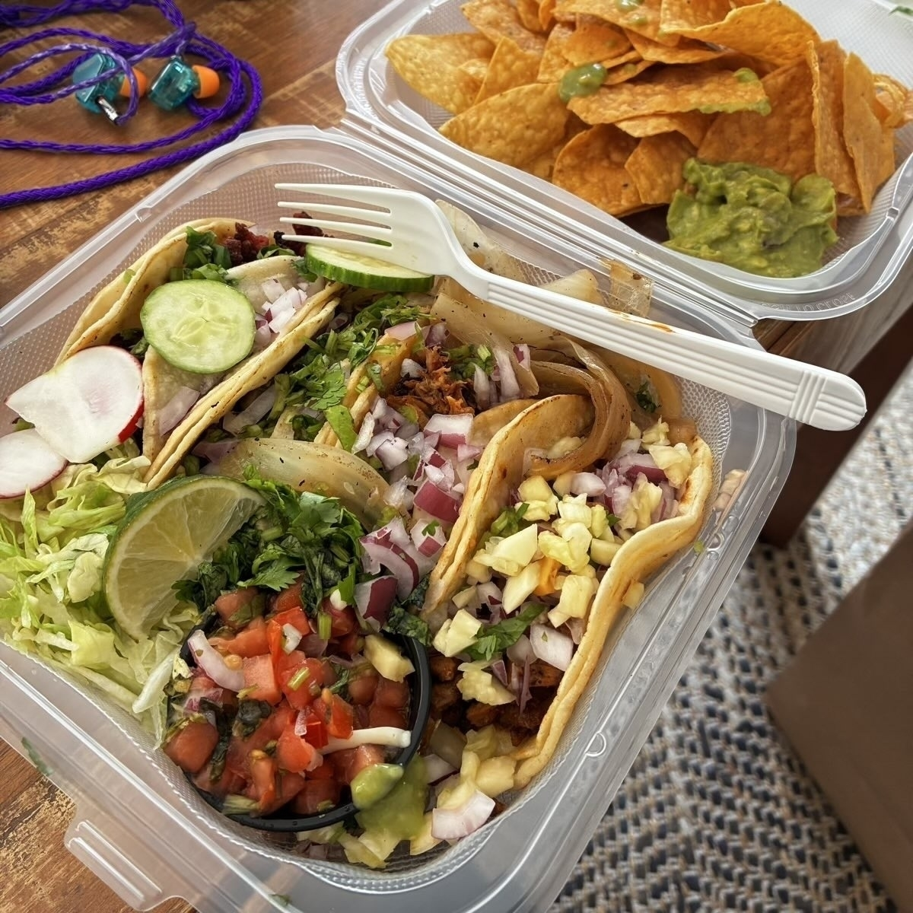
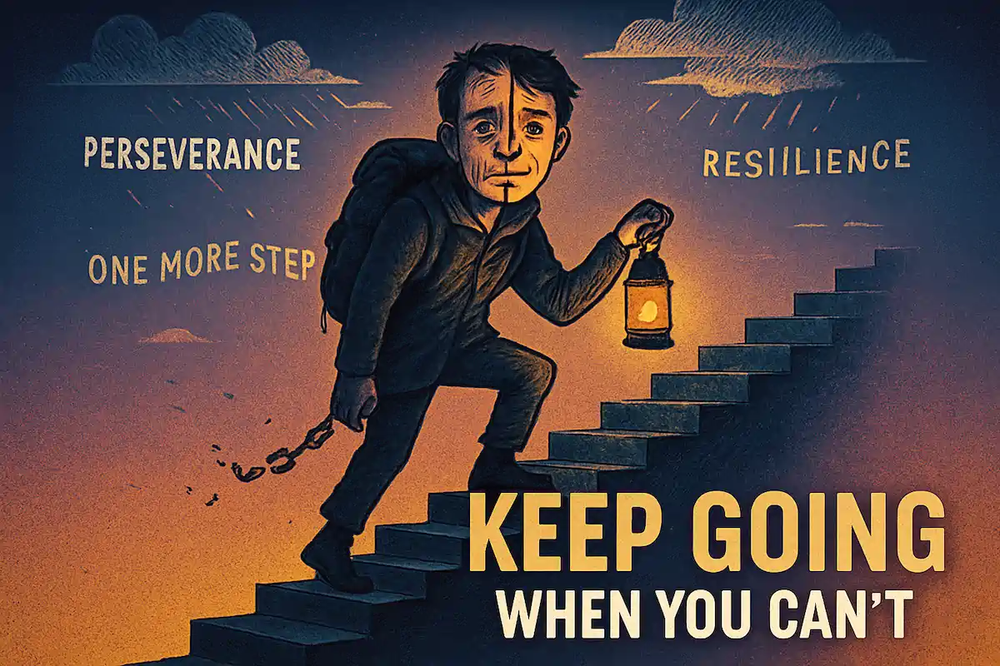

remembering the time we had these great street tacos delivered while coworking and also checking if my code is working for something else, man I’m straight hungry this morning — trying to muster up weekend energy in the middle of all of this, lots of change energy and timeline shifting, loki vibes.

. ..felt like it was important to remind you (and me) that it’s worth stepping forward and through the darkness to find the bright white of light and calm that is just the other side. outlook bleak, but we still turn up, people gotta eat, people gotta tend to the people they love around them - push!

i’m messing around with templating and layout stuff again, feels like i’m going backwards, the idea was to setup and be done but i guess the amount of setup and done needs to be towards the outputs i need and i have to accept that’s gonna need some configuration and might break later on.
just a test, if i upload from the micro.blog new post does it change my .webp upload into a .jpg and therefore lose the optimized compressed sizing or does it work properly, i feel like it’s when i do it from the micro.blog mac desktop app or mobile app however so let’s find out #moonlife
hmm, weird, when i use the micro.blog app on mac it seems to convert my .webp files that i’ve optimized to .jpg ones, i’m a little confused by this, i’m manually going into the micro.blog to actively deleted and upload the .webp versions maybe i should let manton know about this. i should test.
it’s a kind of smooth-move tea and coffee kinda morning. i’m expecting to go, on a personal level, to defcon one and then get on with my morning. i slept HARD for over 9 hours and my whoop is relatively happy with me, i’m expecting to be productive today fighting for a future me. wormhole life.

thinking about low mental bandwidth days and llm/agents that can step in and still get things done/research etc when your just not flowing like your used too. how to package it all into something useful so bots can pick it up and create new worksheets and prds — kinda leans into telos files I guess.

good morning! it’s blue skies and sunshine. i’m thankful for this moment, right now. any moments after it are the gravy. life is delicate and in the grand scheme of things short, make time for time. fully embrace everything life has to offer and keep your head up and focused on the outcomes of now.
this nikon red z cinema camera has my attention, for the price, crazy! i’ve always liked nikon but felt they dropped off over the years but a RED addition, 32-bit float audio, full frame and that 4" DCI-P3 Monitor is no joke – i’m sure it’s gonna have it’s quirks but still, interesting! thoughts?

ton of brand new hardware out there right now but i’m loving this device from blackmagic to work with the iphone pros, with a rig, screen and every input/output you could want on the one cable, that’s rad, mobile or fixed setup, awesome for fast/compact streaming setup with 5g backend.

did not realize it’s only five days until tahoe comes out, anybody been installing the dev builds? is it ready for prime time or should i give it a few weeks/month before i install it. always looking for the newness but not at the expense of day zero bugs and attacks ya know? minefield out here.

which one are you going for? for me it would be between the air and the pro max obviously, both have their purposes, maybe both, one for daily driver and the other for media work. gonna cost thou, it’s a real investment each year for such devices now, i’ll stick with my 16e for a little, 2k for 2tb!

a good night sleep changes everything, according to the whoop i’m in the green, now just gotta work on that exercise routine, blood pressure and everything else and we will be in good shape – all that being said, overseas things are moving forward and that makes me extremely happy and positive!
Modern developers are modernizing ancient 25-year-old kernel drivers while splurging on sleek workstation GPUs and buttery-smooth keyboards. Yet they’re equally thrilled about lost Commodore 64 adventures and $1400 Star Trek nostalgia—AI research goblins helping them bridge past and future.
DEADBEAT, new tame impala!

counting down the days!
already vibing, glad they still have it, excited for the rest of the album!
blogging from events and conferences is not smooth for “would-be” creators in terms of end-to-end publishing from an event. with tools & ai now it’s possible and i’m going to make it a micro mission of mine to get down those steps to publishing by having ai and flows do a bunch of the work!

Klingon to Every Moment
yesterday, we went to this. . .
The Star Trek ST:NJ: Trek to New Jersey Convention event, organized by Creation Entertainment, features a lineup of Star Trek actors, including William Shatner, Kate Mulgrew, and more, for autographs, photo opportunities, and panels!
Gorn Today, Gorn Tomorrow
there is sadly going to be a time when we don’t have kirk in our lives, it’s just a hard fact. BUT before we write him off let it be known that he was on fighting form, standing up, walking about and just doing kirk things, what a legend and to find out that he has never watched any other star trek kinda blew me away.
The star of the show for me thou was Kate Mulgrew, Kathryn Janeway in Star Trek: Voyager because it really allows me to realise that there was so much more than i had not delved into, she was fantastic, so brave, such a leader, such an inspiration to many, women and men alike – a real powerhouse of a human being, she just had that aura about her and i was glad to have updated my perception of this actress in more detail, i’ll be certain listening to more podcasts and audio books about her soon.
Klingon to Every Moment
the event was really well actually i was’nt sure what to expect as it seemed they had moved the locations at the last minute with bits of black gaffer tape over the logos on the graphic boards all around.
It reminded me of my older days of being on the ground at events in europe with the issues with audio on video playback, locked of cameras and just all the little quirks you see when you know what goes into pulling something like that off – the presenters were fantastic, they really kept things moving along.
the structure of the two days was great too – it’s obvious that it’s a major photo/money play with the characters even thou i do believe they love the star trek family and i’m guessing a lot of people were keen to get a signed photo with kirk, for 93 i’m amazed to be honest and he was back home on a red eye on that sunday night for a job thing on monday morning, he aint stopping working and quite the inspiration on that front.
Romulan Around the Convention Floor
the location was pretty perfect, the car park was full, they setup the systems great for getting in and out and there was a lot of people dressed up as federation, as you can expect from a micro con like this the people there were smart, respectful and really just got along with everyone, most of the ball room sessions were packed out (especially sunday) and we had a great time, it had a nice flow to the day, it was great to have so many of the trek actors from lots of different treks.
Ferengi-ing on the Edge of Awesome
they had a bunch of break out rooms where you could grab merch, the usual shirts, badges and enhancements to your comic con setup. they had a bunch of different micro parts to the day, auctions and trivia contests, voting on who had the best outfit, some great talks as well about viruses and biology – the production team behind it all had been doing this for well over fifty years which was quite staggering that they had just been cranking it out – i think the next one is vegas for sixty years of trek! wow.
Vulcan’t Believe How Amazing This Was
i think my biggest takeaway from the weekend was just how many stories and inspiring takes both the actors and the crowd had to offer to the mix, not the usual “trek changed my life” but more about the diversity, the “smarts” of the way the context of the show made people think about each other, what was right, what was fact and true.
i had such a good time and i really did not know what to expect, it felt rare to have it not in the city and all the potential stress of that to get in to the city to see that, for us it was a relatively easy thing to get too and i was pleased how they deployed it.
it was nice to see behind the veil of the actors and hear some of their life stories, how they loved their fans so much and how the fans were impacted by trek.
A great weekend activity – can’t wait to go to another one in the future!


this bowl came at the right time, we gotta move but things just are not flowing in the right way yet, I’m trying to do less dreaming and more reality to move this forward — even if not to buy to rent closer to where the ramen fixes all of the life issues. time to push through and move forward.

morning! picked up the post, got the dunkin, did the hovering (new dyson epic) and ran the dish washer, got a new cable I needed and then wife got me the magnetic version and I got the breathe right which I know works — hoping the magnet one works thou! peace and love! you good?

ai is epic middleware for media creators
quicklink | replicate
probably a terrible term to use but that’s what it feels like to use some of these cloud services that allow you to play so easily with ai it’s stupid, they have taken out all of the hard work and hardware concerns out of the way.
and i’m so freaking thankful, they can spin up the latest and greatest models in a secure way fast and give me access (for a price) to their hardware investment behind the scenes, it’s a classic saas model these days.
what i love about it more thou is past just using it on the website, the fact that we can now use api’s, ai llms and mcps and all these building blocks to design alongside an ai all of our imagination and knowledge from physically being in the world with the existing platforms and tools and actually approach rebuilding those from a humans viewpoint.
lot of people are making a bunch of money from “wrappers” these days, just wrapping together similar resources and putting a frontend on it and offering a niche service more than likely powered by one of these platforms, it’s for the average person who is not into tech and just wants to get a result without the learning.
maybe i fall into that camp too in some way and i’m ok with that, i’ll never be interested in the raw deep level fundamentals of how some of this tech works, i’m just not that nerdy, i actually want my layer of technology to always be assistive and to the side, not the main character energy, just something to allow me to vibe my way through time.
my hope is that my “toolbelt” tooling for things i need will be similar to the way batmans utility belt worked, he had a tool for every situation, these days we have an llm or mcp or resource that can allow us to build the framework or web into time saving tools that assist us “while we are doing the thing”
take one of my roles in a previous life as a brand advocate on the ground at an event or conference - i saw the need (still do) for better tools on the ground (in transition) for power, connectivity, remote team integration to get the most out of time and events while at these things, every interaction a piece of potential content.
social media and ai are a perfect union for creators moving forward and you can see this from the way streamers have built communities around their “brand values” on the daily.
with these tools we will be able to in real time, remix, rehash, automatically suggest, even augment networking that everything we want to do in life is like having a thousand clones of us can now assist with the micro chores we would do for a clients end result.
One of the biggest frustrations of working with brands and agencies was the result of deliverables at the end of a project that it would hinder our ability to get involved in other ones – from a quote perspective, time planning, content ordering, etc.
to see it another way it’s a little bit like ui/ux but for the very human flows of what you do when you are doing a set of tasks in a role on a manual labour job, you need to do that thing before that and then once you have done them you can “tick” that off the list of deliverables in your day.
having a tooling chain of processes (scripts/apps/programs) that allow me to interact with things like replicate means that i always have a tool i can creatively vibe with to get the result in the moment i’m thinking, media constructs if you like, outcomes, all remix-able and adaptable at anytime.
and that’s different for everyone right, the needs you might have or the output you want might be super simple.
now if you have a vision for how content should be aggregated together you can build the most ultimate social media dashboard and start actually using ai to be the editorial driver, imagine having agents across the board.
with that in mind, what would you build for the industry you are in, that not only assists you to better perform in that role but could open up new opportunities for you with an assistive ai partner in your pocket?
me? Well, I’m going to build out a bunch of processes that I can integrate these APIs and build a collection of virtual content creator team members that can be utilized at a moment’s notice to deploy a media moment into a far bigger experience!
allowing me to not only enjoy the moment but be in the moment too!

i feel the overwhelming need to find out more information about this. I’m hoping it’s not a concept, maybe at a push you could modify one of those electric VW ID Buzz things — we are rapidly heading towards night city!

Today’s digital wandering led through AI agents and creative code. Discovered elizaos.ai for AI orchestration, stumbled into the demo scene rabbit hole, found TIC-80 fantasy computer, and ended with Kite for curated news. The web rewards curiosity.
still in shock that it’s september and august just went so fast. time waits for nobody and all. should be a nice weekend, days moving at light-speed all around. trying to have a light friday but i’ve been looking at remote jobs and collecting links, that post should be next in fact. peace and love.
right track for residuals in 2025
quicklink | Humans Are Being Hired to Make AI Slop Look Less Sloppy
it’s nice to get something re-affirmed, the wife sent this over to me today.
makes perfect sense and falls in line for what i was thinking for when i can work again about providing services that are aligned with this, people are obviously seeing how ai can assist and help and probably don’t want to “understand” or learn the technology and elements that are needed to take and idea and flesh it out across the board for a fully fledged product.
also, slop, lots of it, it’s so easy to prompt something, even give it a prd but you still have major things like database, security and scaling issues let alone help and support and building in new features, it’s a constant living breathing thing.
lotta people just want the quick wins, they always see ai and think i can do less and get more.
personally i’m not interested in fixing slop code, my area i think is with the latest and greatest models that come out, using the api’s and building content/creation tools and interfaces so that i can work with clients around the clock even when i’m sleeping and wake up to a bunch of “in-flight” jobs that a client might need.
the important thing is to be very clear about the offering, how much it’s going to cost or how much the client can expect – having been on fiverr on and off for a decade i’ve had a lot of jobs and understand the need to really hone the offer before it gets out of control and ends up costing you more time than the task originally offered.
most of my clients a year back wanted the videos i made because of a very interesting effect in ugc (user-generated content) someone my age that’s been around that has some level of media training on camera and understand the remote audience and expectations can finely hone the message and expectations of what i’d want to hear from a video – my age actually helps me!
add on that a layer of technology and all of a sudden you start to become a fractional remote reliable contact for add elements of ai to either original content or to remix something they already have in your style – also, time frames here are important, i can offer the usual analog time frames of the “shoot” or a speedy, send this, get that, multiple versions, send back what you like and we can move from there.
time is money and all of that.
both fiverr and udemy have been very good platforms for me in the past and i aim (when i can work) really build on those with ai assistance to take out the mundane and get back to the rapid deployment of ideas and training i had always wanted to do – also, multi generational, that’s a major problem with “content” on the web, it’s often for the generation you are in, but i think we can use these new tools to reformat, heck even language, virtual aged actors, everything. .
i’m also looking to expand the carrd template side, but the ultimate aim is to be a “curator” or “aura farming” as the cool kids say today around the things i’m interested in that save people time. you can talk about productivity and systems i guess but i also think there is a case for flow and mental health – those systems only work when you are doing good, you need systems that work and adapt if your not.
i’m more interested in having 10,000 little things bringing in $1/2 for saving someone time than a handful of stressful apps or projects or things that allow me to have residual income that take a lot of my day – the ultimate for me is that i work just the mornings, early all the way through to lunch and then the rest of the day is content creation and time for myself/family.
feels good to have a plan, to feel on track.
. .. although if it all goes awry i’m sure i could handle working at wawa too ;)

offline discovery to blog via claude project
so, I’m currently working on a Claude project where I’ve built out a PDF PRD after talking to Claude for a little while to do a few simple things that I think will add a lot of value to the blog in the long term, especially from a search perspective or using AI to ask questions about media and content that I came across that day.
currently i’ve got urls and links that i aggregate using a dashboard called glance, it’s a fantastic piece of free open source for making dashboards. It’s got a bunch of content creators i like on there and a bunch of reddit and rss feeds from across the web, it’s my at a glance look at the pulse of common places i go too, it’s even got hacker news on there front and center.
my need is quite simple
- post my complete list into my claude project
- the project instructions come from the pdf prd (built with claude)
- output two versions, micropost (300 characters max) and a blog version
- ability to copy and paste markdown into micro.blog
future features
- splinter off the urls collecting into separate daily list in bear (so i can use the api)
- use the micro.blog api after review via telegram (or something) to push microblog
- maybe create daily draft posts so i don’t have blank page vibes
- combine getmatter.com (matter) read later into output too in some way
i spent quite a chunk of my morning collecting links i’ve found and i’d like to automate a bunch of that, i’m quite ok for them to live offline in my bear but i think want to get more social value about them and often times it creates conversation around the blog and on social in general when someone is always an existing user of a platform or is looking for a tool to make things easier.
i’ve always been very much a keymaker kinda of character because of my early BBS days when i was ratio’d out of my mind! also, mad hoarder, that tutorial, that thing with a short link or a stash or stored on a nas/cloud somewhere.
i think i want to start taking the “weight” out of that so i’m not so tied to it, in a world of hyperconnected ai tools the need to do this ourselves is falling away, i’m not saying the personal choices part but the actual nuance of the moment is kinda just becoming this blob of context.
i love that i can make little tools like this with ai, either as .zsh aliases and scripts or something much bigger, i love the idea of fixing or creating a fix/timesaver and charging a small amount public facing for that – especially for content creators, we need more people making and adding to the conversation instead of what we have today which is more absorbers/viewers.
so expect to see more daily blog posts as i try to combine my links addiction (collecting!) and generally writing a post, i think i can combine the two nicely and have something public facing for people to see, a lot of my discovery has been offline and personal up to now but i love the curation aspect of the “find”
it’s been perfect in the current life state i’m in, i’m not allowed to work at the moment so i’ve been learning, re-learning, trying to be more in-tune with my daily life and general all around health. this has given me much needed thinking time to recalibrate what i want my life to look like in the next years, including where i want that to be and why – where the opportunities might be next.
once i get this prd/claude project fine tuned i’ll share what i’ve learned in much more detail.
my idea situation is a bear api note integration, then send that for review to say something like telegram (some chat app) so i can test and review and then finally push as either a live microblog post or a draft for a blog post on micro.blog that i can pick up when mobile.
obviously it’s got to fit with the other things i’m considering which is to build out the og “medium/me.dm” idea of a tool for content creators on the go or on the desktop to be able to rapidly deploy their content at scale, in multiple ways.
— discoveries for september 4th 2025 —
The developer productivity landscape is experiencing a fascinating convergence of AI integration and workflow optimization. Zed’s next-generation code editor exemplifies this trend with its human-AI collaboration focus, while Graphite is revolutionizing GitHub code reviews. The AI integration theme continues with VTS for lightning-fast macOS transcription and Mistral’s chat with memory capabilities.
Data processing is getting a major upgrade with Polars dataframes, positioning itself as the tool “for the new era.” Meanwhile, FlowMetr provides comprehensive monitoring for workflows, pipelines, and AI agents—essential infrastructure as AI becomes more integrated into development processes.
Content creation tools are also evolving, from Mythos theme for faster blog loading to Lenny’s Product Pass offering structured learning. The common thread? Tools that reduce friction and amplify human capabilities, whether you’re reviewing code, processing data, or building the next breakthrough.

Modern developers are embracing smarter code review, AI transcription, and next-gen dataframes. From workflow monitoring to content creation, the toolchain evolution accelerates – i’m currently experimenting with a claude project for my daily offline collected links for global sharing. .
forgot to say, hospital trip recently, ankle situation, not me, the wife. like sitting on the set of the pit, I was tracking data driven stats on the screen, they were at 75% capacity. these people deserve all the pay rises. luckily she is on the mend thankfully, could have been much worse

WD_BLACK 4TB SN8100 NVMe SSD Internal Solid State Drive - Gen 5 PCIe 5.0x4, M.2 2280, Seq. Read Speeds Up to 14,900 MB/s, Best for AI Applications, Gaming, and Video Editing discovered today that such a beast exists, i never played with gen4?! - 15,000 MB/s READ? , transfers like equalizers now. ..
think i’m going have to vibe code myself the perfect mobile content creators mobile app because everything i do on the go ends up on the blog as massive .png (instead of .webp) and video files that i wish were .webm (mainly for speed and loading for mobile people) and getting good pagespeed scores..
good morning! well, that’s me paid up for the year, decided to jump in, i love it here (micro.blog) love the features, rapid dev, thoughtful design, rapid response to things and general “pulse” to the site. must mail support at some point and as about lifetime plans, etc. anyway, it’s meerkat wed!

i bought the Linsoul 7Hz x Crinacle Zero:2 in Ear Monitor, Updated 10mm Dynamic Driver IEM, Wired Earbuds Earphones, Gaming Earbuds, with OFC IEM Cable for Musician a while back for like $20 and they are actually pretty good, just swap out the cable for something else, iem side hobby quest unlocked

i wish micro.blog had some additional cloud services, maybe add on pro features, maybe charge like $1 or something each for very basic transforms (or maybe i can do this in hugo, still learning) things like optimized image to .webp, compressing video actions, inline audio recorder, stuff like this.
so i’m gonna be moving the css rendering code to production (so basically at load time, not touching dom), got new banner on reload, got ability to use cursor keys to go forward/back on blips which i think is nice. next i think i’m gonna be messing with the button menu on mobile to hide/reveal :)

and you look up and you are on tuesday, yesterday was a holiday here, personally i’ve lost track of time and space at this point, just so much waiting and observing. decided to get the yearly for micro.blog this month to cover the year, i’m gonna have a lot to see and i need a place to say it!
looks like it’s gonna be a stunning day and the perfect temperature, itchy to get in the water and float for a little while, hoping for a relaxed day, maybe catch up on some shows or movies after yesterdays little trip to ER, never a short time, calibration point for sure, and yes, everyone is ok!
I’m pretty sure every car I’ve had or at least looked after in some way felt better after a car wash. maybe that’s just me but a car just feels different after a wash — and now with vacuum as well it’s a whole thing. you own transport is nearly a must have here to be honest.
just part of a big trail you hear about in history one time and now you can walk along it. no big deal I guess this is just what hyperspace planet jumping feels life — it’s a good day, be nice to your mental health m’kay?

gotta go in and actually change the hugo template/code instead of restyling the frontend via css, i’m happy how it’s working out but i need to get some speed improvements, also every hour, the logo changes on the website, i will expand on the interactivity of the blog in the months to come! :)
i think it’s about time we upscaled and remade the “never ending story” but used this year as a new benchmark of what the nothing could be. i’m actually excited for new re-imaginations of a bunch of content i grew up with and what shaped me into the person i am today. source material so important.

one of the perfect things about a world with ai tools is that i can change direction and work on something else, platform or service not working, just switch it up, minimal downtime, zero frustration, i want to deploy that “round robin” working to everything i do moving forward. no time sinks ;)
realizing might need to have a design system for images of myself moving forward that are sharp, have clarity and different emotions, reactions, could be a complete 3d so that all these new ai tools for image/video making have a good source material, because literally can always be on holiday now!
there are certain songs that just grab me in the morning, this has become one such track, it’s the perfect track i want to listen to as the sun comes up on a walk, or with the window open or as we pass countryside in the car or on a train. music is free transportation, dances on the senses..
and as friday swings around into view i’m thankful for my body holding out another week. mental good, eating well, need to exercise more and get good sleep but i’m thankful for everything in front and around me and i’m sending love overseas to the ones i love dearly. all love, no pain. onwards!
i’m excited for the days when i get to truly build a very nicely put together fault tolerant system that has a well thought out firewall frontend with ai features and lots of different bits of connectivity, especially satellite, nothing excites me more than a bunch of failover and redundancy!
honestly the speed of making lunch and taking timeout are important to me, I think it comes from working twelve hour shifts in warehouses getting thirty mins for lunch.
it’s kinda hardcoded into me to make lunch go as fast as possible so that I can get time back to get back into things.

single function ai devices

quicklink | pi sugar studio
as much as i love the idea of having this in headphones and maybe a hook up to a mobile phone you just know that it’s gonna be gated or clunky or using a model you don’t want to use – at least with open source and relatively cheap raspberry pi arm hardware you can tinker to your hearts content and get it filling the very niche application you might have for it.
all this really needs is a big of a teenager engineering overhaul to the design part of it to make it cute, or someone like nothing phone or someone similar with a design ethic and you have a really powerful product on your hands. i’d love to make one.
we have been never been more connected and yet so isolated, fascinating.
struggling to talk to each other but happy to augment conversations through a third party that knows everything is somehow better because we don’t have to do what exactly? :)
i’m not sure what the total cost are for these devices but i could see a situation where you have dedicated devices that are agent like that use different models for different activities around a house or homestead – one for the kitchen, one for bedrooms or the home desk, one in the garage or the car, built for different activities where you do different things but need a time saver and want to be handsfree.
some times the “one size fits all” approach of say a home assistant is often marred by the flow and journey you end up going on training the damn thing on the way. i’m excited about relatively cheap things like this that you can build yourself and optimize them for very specific needs.
for instance, think your elderly parents having an elevenlabs version of you (your voice) as a care provider that takes as much input as they feel comfortable and then route any requests at the end to templates you might already have setup for food delivery, uber bookings for hospital trips or other things they often call/message about.
i know that sounds like i’m just outsourcing “family” time by reducing the “human” interaction but often times the issues we see compounded with families is often generational, time becomes this resource that operates differently depending on where you are in your life and each has an urgency often the other fails to account for – this is where i see ai bridging the time sinks.
anyway, ranted enough.
rad project, i want one.
someone should start a trusted/secure po-box style system that’s not a po box system for all the addresses that cannot receive mail due to issues with managed buildings. like some kind of old style mom & pop thinking but modern day technology, combined third space, wifi, coffee, launderette. .
it’s crazy the consumer hardware you can get for six grand. yes, i realize that’s a lot and it’s a major investment but if you were looking for a gaming machine, a virtualization machine (docker etc), homelab, ai machine all in one i’d probably go for something like this, it’s stacked. wow.

love the upsell, love the old school envelope and neat invoice and the hand written name written on it, I know so much about brenda now without even knowing her, ya know?
I have so much respect for the old school they did things in such a proper way, I’ll be sending her a letter to thank her.

 one of the wonderful things about ai for someone like me who is not a developer and never probably will be is the ability to take what i know and to realise something because i have a foundational knowledge of the tools and what they can do, i’ve never applied it, now i can, fast.
one of the wonderful things about ai for someone like me who is not a developer and never probably will be is the ability to take what i know and to realise something because i have a foundational knowledge of the tools and what they can do, i’ve never applied it, now i can, fast.
typepad is shutting down seems like a perfect time for micro.blog to build an importer to micro.blog right, alongside the free offer for doctors and nurses they have going on. just a thought for market share and all that, maybe some cost discount in the process. dunno, just a thought!
living in different times
quicklink | past forward (google)
after reading about the telos file yesterday and discovering this new image generation model (banana something) i did a bit of digging around of the templates they put out.
i came across this past forward template they bundle with it to show devs what they could use the model for and i just absolutely fell in love with the image generation tool that allows me to see what i might have looked like if i lived in a selection of different generations from the 50’s all the way up to the 00’s.
i instantly had to spin up claude and build myself a little script that bundled them together as a .mp4 with transition effects and to put the text titles in the image top left corner, it probably took about thirty minutes.
the gif version is cleaner but it’s massive to i spit them out as mp4 files, gif would be better for transportability, maybe i’ll look at making a gif version that i’ll bolt onto this post if i can get the size down.
more than anything it really got me thinking about how lucky we are to experience this time now, in this realm, in this time slip that we have access to these tools. looking at a virtualized potential version of me, what would their life experience feel like, what was their achievements in their lives, what baton did they pass to the next generation, were they even thinking about what came next for their children or did they just want them to be happy and healthy like most parents?
(for full effect maybe play this while it cycles around)
how environment changes the person behind your bloodline, is this the future our uploaded digital selves will feel, misaligned, a person out of time, no anchor point to the reality of the ground underneath our feet, is that really ground, atmosphere, gravity?
will we always be running from doubt, that hollow space between the feeling of something just out of reach or will we feel more complete that we can swap out from all potentially known infinite dreams into something that excites us to exist at all?
it certainly triggered something in me, like looking at old black and white photos, the query that happens internally, we all have it but for different reasons, same as when we restore pictures from all the scratches and blemishes to a quality of fresh and new like we are used too, make time and damage really is what makes something feel ages and therefore where the legacy feels come from.
something powerful about being from anytime in time, timeless.
i think i gotta watch that film again. i never really understood that a) it was brie larson and b) that she covered the track – personally i think that it sounds better than the original but that’s just me i guess.
honestly the new image model from google (banana something) is very good, even down to the lighting for the scene, admittedly this was a on a green screen background but it’s very very clean. gotta write some slop code to put together my content creator tools ideas.. .

woke up to some awesome sleep, 8hr 40 mins, i never sleep that long, i can actually feel my body feeling recharged and on-point thanks to whoop. data insights are everything. you gotta execute forward motion on days like this.
the telos method is freaking rad

kinda stumbled across and ended up watching the whole thing.
i watch network chuck from time to time because i love the topics he covers and his editing style and general vibe. he’s a good dude, you can tell he’s a smart man and he’s designing his life now and ahead of him.
this is my first time coming across Daniel Miessler, he seems super focused on making sure he has a million agent versions of himself to cover all his bases when he’s not 100% himself – i love this.
i might be tiny potatoes in the way i’m making daily bear files (could be exported as .md files) but his whole process is really interesting to me because this method really speaks to me in terms of what i’ve been thinking about but just purely for content creators – this has opened the flood gates to be a much bigger idea than what i had thought.
and it makes perfect sense right, to have .md files that llm’s can ingest easily and it’s basically a blueprint/roadmap for who you are, who you was and who you wanna be. i think he even mentioned something about getting uploaded into the cloud when his body gives out, which really opened me up to the potential of this digital legacy when you combine that with ai/llm – because if you have ever made any content digitally and it’s on the web, you are now able to build upon that.
and what’s the important factor there in a world of generative? the ability to control that, the ability to be a source of truth of that, admittly it’s what “you” believe of yourself and i’m sure we will see methods for creative remixing of that from “trusted” partners that see you differently but it’s kinda of the “reputation management” i thought about years ago as social media took off.
it was the missing piece for me – the classification of you, what that looks like, what happens when you and your meatsack are asleep and yet the llm’s are whirring away around the clock wanting to hire you, onboard you for a project, need your input or insights, what does that look like in terms of handoff, can it be done with out, how will you get paid, cash money or tokens?
see, i’ve been thinking of ai and agents that do things for me when i sleep in simple terms, things i can wake up too and action but i’m realising now that we need to train the aggregators of the human (we) in the format that llm’s are going to expect and hoover up, the more the cloud knows about you and you want to interact with the more you are going to get relevant things that are more aligned to your values.
the key take away line for me was. . .
" without being able to remember why your doing what your doing "
that really hit me, because this is the world i hit everyday when i get to the computer, there is more than ever an infinite amount of things that i could be getting into, there are a million things that i’m interested in, there is ways and means now for me to format and intake that information in a way that does not trigger me, that does not overwhelm me, where the notion of a digital butler can relatively understand my “capacity” of the day based on my health data.
it’s all possible, but if we attack it headless without any classification we are just stumbling around in the dark in prompt land, we have to give it so much education as to the why for us that it removes the benefits of getting that time back.
totally recommend checking out the complete video, a great kinda fireside chat about the method, i need to dig into this much further, and i thought my now page was where it was at – i was wrong, i’ve got work to do!
in europe i email a place, they give me the information and i can process it at any time. in america, you email them, they call you, drop the information in the voicemail and expect you to call them back to sort it out. no, i just want the account details so i can do it my own time, my flow. sheesh.
do you ever look at something, markdown-ui.com and think that’s gonna be useful for “something” that’s how i felt when i came across this markdown ui – i’m not completely sure how i would deploy that yet but it’s cool that a lot of the things i have are in .md these days.
One Universal Antiviral to Rule Them All? – what does a world look like where we have one antiviral that ticks all the boxes, how much would it cost, who would control it, what does that mean in terms of global crowd control, makes you wonder what designer drugs will be in the near future.
fresh day, fresh week, 95% recovery day, i’ll take it. still very much in that waiting mindset for paperwork, mildly frustrating, gonna spend time digitally tidying, mentally and physically with the new wireless dyson (which rocks btw) – ok, time for more coffee and to dive in.
pick a path, choose a lane, niche down. all advice that on the face of things is good but actually when your in the process tends to bring up lots of other things. is it the right path, for how long, will i get bored, what if i wanna be in all lanes at different times, one niche seems, kinda lame.
it’s feeling like a hacky css day today, time to fix a bunch of layout stuff and maybe noodle on some of the bigger ideas and make a plan for the week for learning how to properly mock/map out a design system and build my blog better, thinking of upgrading and making some different standalone themes
I’m always blown away at the contents of a local costco. today that was pushed into another realm.
I mean we nearly walked away with laptop desk stands for the sofa —you really need to exercise much willpower in that place.

a16z | PC GPU AI Workstation Founders Edition
quicklink | 𝕏 buildout | a16z blog
💦💦💦
- 4x NVIDIA RTX 6000 PRO Blackwell Max-Q (384GB total VRAM)
- 8TB of NVMe PCIe 5.0 storage
- AMD Threadripper PRO 7975WX (32 cores, 64 threads)
- 256GB ECC DDR5 RAM
- 1650Watts at peak (runs on a standard 15Amp/120V circuit).
For training, AI research, and deploying models locally. A datacenter-class AI rig you can keep under your desk.
christ on a BMX.
well, that’s ruined my friday. . . .

Garden State Life: Micro.blog, Dojo & Deli
. .. so around these parts it’s all strip malls with pizza, bagel and martial arts.
it’s the ultimate tri-fector of what it was to be a kid in the 80’s growing up, i personally was watching remotely but every tech film i watched i got the vibe.
it was only when i was presented with it in the flesh that it hit me that i needed to make a whole line of merch for the vibes i’m transitioning through in the area – i decided to mix that up today with a rough cut on one for the blog including the micro.blog url of course.
i think ai sprinkled liberally between the creation and the endpoint can really inspire a million things, it’s adaptive, expressive as well as slop at the same time, i understand the need for proper “works” and “time served” for us not to just to descend into copy/paste mills of pseudo creators but i think there is a middle ground.
also, i’m gonna get my bag, regardless of what that looks like and whatever anyone thinks about it.
i realise that’s easy to say from a place of privilege so i made such to check that on the way in.
if you know me, if i’ve got and you haven’t, you’ll get it. i’m very much a giver when i have the resources to do so.
sometimes, you need the ignitor not the same old same old.
i move fast and i distill and adapt/adopt and see how it feels, then i do a 180 and see what it feels like from a different perspective until i realize what it is, i’m a visual learning you see.
digital environment dexterity is where we go next, we have all the tools we ever could want, now it’s about flying them at the right time, getting in, getting out and getting a result – wielding these things like we are casting spells, because that’s what they are truly when you strip away the technology and see the input and output and measure the impact.
it’s the new digital fire starter.
bend time like your life depends on the quantum signal of the future, because of today it already does.
now we all know kung-fu.

micro.blog feels like the web did before the “burn” of social media crash as we thought we would just transition into web3 and the literal dumpster fire that turned – i feel like we took stock, restored to a good save point and then started intergrating the decentralized things that added value.
maybe a bookmarklet thing is needed for micro.blog, has anyone made one? i need something that can clip youtube videos, allow me to write something and has all the current elements of micro.blog so i don’t have to worry about my shortcodes, could use for spotify too. . see > clip > post > out.
consider this question and if you see this in the timeline consider a reply: you are able to study/learn/consume/reconstruct your whole life for a year. what would you do first and why plus what elements of doing those things would set you up for the future. like a mid life restart, thoughts?
using the macOS text replacement to put my micro.blog shortlinks in just for speed, i can see myself building a whole content creator shortcuts pack on the mobile as well or just a simple quickfire app that is 1/2 click and done – miss the posterous days of emailing a post in so i need a fast send
heartily recommend that you install matter if you are someone who wants to read stuff later but got caught in the crossfires of platforms shutting down or just want a refresh, it’s clean, fast and works fantastic as a clipper in browser and viewing on mobile. TREAT YO SELF.
black rabbit money play or jude law chemistry?

talking with the wife yesterday while watching the trailer, we want this to be good.
we adored ozarks and bateman is just an OG and he really came into his own in ozarks.
i kinda like jude law, i’m not a massive man by any means but like my wife said he was doing alright pulling off a brooklyn accent and we do like the premise, very much like ozarks in terms of spicy meatball script.
let’s just hope it’s not a blank cheque netflix cash grab for content and actually something well written and edge of the seat, so many shows are coming back that it’s that season to be in and watching stuff under a fluffy rug.
and yes, we know the pit is coming back in january, stoked to hear about that!
thoughts?
good morning! first part of the day will be upgrading the OS, these days it’s all a bit of a random ssd risk from what i’m reading from windows11 users, eeek, let’s hope the apple boys are a little bit more mission critical testing of their own hardware, it’s friday, let’s get it, forward motion!
Currently reading: Mastering AI by Jeremy Kahn 📚
I’m seriously looking for decent walk/running shoes as I really need to get my fitness levels up and my current footwear won’t cut it, thoughts? I realise one of these is a more heavy hiking shoe btw I just like the style I think.

ai fills me with so much joy. we can remove doubt from our lives and at least in the moment have an accountability partner that can at least point us in the right direction in a moment, no more blank page, momentum giver. it’s really a marvel to have the worlds information at your fingertips.
housing: it's all so expensive
me and the wife have been going back and forth about houses for most of the year.
the prices here are crazy and they are literally sheds, i don’t see anything so focused on the “quality” side of a property when it’s under half a million and it’s just a big scary shock to want to take something like that on in the middle of the economy as it is.
that being said, real estate, especially where we are year on year is just going up price, the idea of a recession and work changing without a formal “work” plan scares me. i know ai is going to change things a lot and it’s going to be the people who do and the people that don’t.
it’s going to be a real clear divide/division, more than it every has been so the hope is that the people who have invest in the people and the services they offer so they can level up in life too.
even thou it seems like a life time ago i remember when i bought an apartment with my dads help for £29k, top floor apartment, 1 bedroom, had a comfortable job and my mortgage was £300 a month. i was stoked, it was accessible, these days, especially the newer generations are frustrated on the daily that they cannot get on this ladder and rightfully so.
renting here is interesting even thou it feels like dead money while you are stacking money into savings and 401k there is a benefit for having everything managed, one bill, no worrying about multiple energy providers and such like – the ultimate would be to have something we could buy and still maintain this.
but then you have the longer term traveling problems, if i leave, i’m gonna have problems coming back in with the way things are i think, even for say ninety days i think that’s gonna be an issue. we would have to maintain the rent on the property so that’s an issue in itself.
it’s all so, well, uncertain.
if it was up to me i’d do a couple of things, get a fully specced out RV we can drive or find some land of a community that already has a tiny house culture because really when you strip it down you just need a roof over your head, security, heat/cooling and that third space.
we feel incredibly lucky that we can both be remote workers in the way the world is right now, everything seems to be coming to a head on the daily and things are just moving faster than ever, career and money are changing rapidly and it’s hard to keep abreast of that change while you are knee deep in property fixes.
things can change in the blink of an eye so who knows, maybe we will get our time sooner than we think. as we travel around, it has an impact on our commute to anything “social” or “food” we love so much so something has to change, we can’t just be thirty minutes away from civilization before the landscape opens up to humanity.
it’s good to be “out of the way” but you miss the benefits and the enjoyments of being near things and it makes life more enjoyable when you can just run out in 15-20 minutes to get supplies or resources and no have to make a trek, it just opens things up more.
don’t get me wrong, being out of the way, offgrid thinking, ongrid supply, with amazon deliveries and our big costco runs it massively helps but we can’t do the stuff we prefer on a whim.
we’ve also been very interested in the boomer death space of boring businesses that would work a 1000% better with a technology layer. we are both really good at tech and people and we know taking on something like that would help us move forward in life if we had a bunch of “actions” in rotation.
it will come, i’m putting that out there into the universe by typing these words!
peace and love mouse x


i’ve got three of these, for people who have not jumped into google veo3 yet this is a way to tinker without the massive expense, “Friends will get a 4-month trial of Google AI Pro when they subscribe with your invite link” – pretty freaking awesome! get on that deal for sure.
twenty minutes to write a blog post, i think i can go faster, the pursuit for the quick post days of posterous are still just out of bounds, it’s crazy how much tweaking and messing i do, i think ai in the middle of all of that to a blueprint/template/styling that you like can speed it up!
am i fighting for honor for sto-vo-kor?!

ugh, 105, heart racing like a MOFO and i’m sitting still.
my usual floats around 65/75 so i knew we had trouble at the mill.
gotta love technology that confirms your thinking. yesterday after what was a toilet experience like no other i realized that i might be sick, my skin temp was over 100 and my heart rate was the same.
something was not right, i got the shakes, i wrapped up and it was better, i still had an appetite but yeah, bio warfare afoot in the body. doing an *egc on your wrist while you are in transition is awesome. well worth the cost, although i am looking at bevel health as well if i do get an apple watch.

doing a quick search for the local area for illnesses, coming to terms that we are transitioning out of summer into much reduced temps it hit me that it could be one of a many things, i was hoping that i would not be out of action for days, thankful i feel like i got out easy and got the reset i was hoping for today.
these days i always panic that maybe this is time when things just happen/decline and boom i’m in unhealthy land and all the hopes and dreams you have fall away and health becomes front and centre – i’m thankful for any heads up about it.

it kinda feels like the world after the pandemic never really stopped being just a lot. i know all generations are feeling it in different ways, as a gen-x it’s just more of the same, just picking off the scraps here and there, trying to elevate to a modicum of existence out here on planet earth!
knowing that i was ill means i can make decisions and choices so not to get out into society and spread the darn thing, so props for *whoop for that, gone are the days of just sucking it up and hoping for the best!
- whoop links are referral (just a heads-up)
claudemade | youtube climate impact calculator
quicklink | youtube climate impact calculator
storage as we know has a cost, resources to build the thing, the power to keep it up in a data centre, the cooling, the list goes on. it nags at me that the majority of people who post “content” to the web will never really truly know the impact of all this web storage.
the water usage and everything that the cloud affords us that we can click and push it “somewhere” compared to how my entry point was much different from being to host anything anywhere like we have today.
heck, just hosting a realplayer piece of video was an absolute challenge after you got past the codec part of encoding (if it did not crash while doing so) we have come a long way.
that’s not to say we have not deployed novel ways to use old infrastructure and lake adjacent locations where we pull in, cool and spit out water and cycle it but truth be told, the very tools we use to communicate and build, especially ai are increasing cooking us like a baked potato.
maybe off world storage connected via satellite will become the new normal, seeing as intergalactic email has a nice ring to it.
i want to make sure i have these little projects live “somewhere” but i’ll clean them up later as another projects page as i really start to rattle them, oh and trust me, the irony of using ai to build the calculator are not wasted on me either.

seems the claude pro plan ain’t all that these days, i literally did like ten things and it’s asking me to upgrade and i gotta wait a few hours from now. i wanna use claude projects thou otherwise i’d just use openrouter or some ollama local thing? thoughts, what are people using?
what are people using to push voice notes to their micro.blog? i’m interested because i made some code last week for hosting on github and putting a shortcode for a player and pull from github which worked nice but wondering if i need to build a little app now for recordings! phew.
it’s crazy we live in a time where i read the words “is peace priced in” and instantly i wanna learn how to build a spacecraft so i can depart this puss infested toxic fk show. i mean, sure, the world operates on sentiment and feels but this is something else.

one is not the same as the other. also I had no idea they had other flavours of cafe du monde. are any of these star wars any good?


the food here is always incredible, super thankful to get the chance to get back here again and I hope one day we can bring my daughter!

usenocturne v3.0 and terbium works a treat now!

quick urls
usenocturne (firmware)
terbium (burner)
once upon a time spotify sold a dirt cheap device that allows you to have a little screen in the car, it was called carthing.
they sold lots of them very cheap and it worked great for skipping through music on spotify while in the car.
kinda low powered hardware but what it did, it did well, fast forward maybe a few years and for some reason spotify decided to kill it off!
we will probably truly never understand the reasons why, maybe demands on the api, issues supporting it, resources to rebuild it, hardware challenges etc etc — we may never know!
fast forward to today however and version 3 seems to have hit the ground running with a very polished easy to install version that just works and has great clean ui and onboarding.
I’ve not been keeping up with the development but the first version was laggy, needed a raspberry pi in the car for hotspot and was just a general hot-mess.
that being said they hung in they managed to reverse engineer the gpu/graphics side and do a clever bluetooth/phone hotspot setup, nice!
it’s not a 1:1 however so please limit expectations but what it does it does very well and brings back a bricked niche hardware product with a new lease of life.
we’re gonna redeploy it back in the car today and I’ll let you know how it goes!
If you want to do the same with your own or one you found on eBay just grab the zip unpack the folder and use the bootloader program site to load that folder on to it.
all you need to do is keep buttons 1 and 4 down as you plug it in and so it has a black screen, you’ll work it out. easy dub.
peace and love mouse x

what I love about this I discovered through someone’s micro blog was this vhs cassette app that pulls back a random video from a year you select, if I can share to the tv which I think you can with the old style location/time on screen like an old school vhs tape loading shoulder mounted camera ;)

many years ago I was thinking of a similar thing called ammo box and I had designs and layouts and mockups — now there is this, this ain’t it! so I gotta work on my own again, this is just phoned in! Ugh.

in the end today I ended up using a up to date no JS css grid made with gpt5 through openrouter and applied to my photos page and updated to work with .webp as some did not work to my needs.
I’ve not finished really and I’m sure I’ll be doing more tuning and plugin making as I’m thinking themes.
powertip: don’t use ai to mess around with small css changes because you’ll spend hours using an AI and it will just run freaking riot with stuff it has no idea what it’s doing! :) – i’ve got it to a good place, i’ll revisit it later or i’ll waste the whole freaking friday for no reason!
saves me from building one, or at least, stops me from carrying on talking to claude and making one as good as this – https://github.com/yourselfhosted/slash – great little docker install, self contained little links hub, can see myself optimizing all my shiz here instead of bear (back to posting)
it’s crazy to me that you can go half your life and never seen certain insects if you don’t travel and how much is makes you realise how much you don’t know. also, Spotted Lanternfly are invasive af and i’ve reported it because i’m a good person, comes from china/vietnam as far as i can tell. wild!
dailycontent | clintus.tv

do you watch any youtubers on the daily? clintus.tv is one of the old school vloggers that i’ve just started watching again in the last few months on the daily, mainly to anchor me back to my old vlogging days, different times, good to see his family doing well, he’s crushing life balance as far as i can see.
I want to build a little tray bar app at some point that allows me to grab feeds of some of my fav vloggers and cycle around them with some nice crossfading effects and auto set 1.75x speed, i’ll make sure to embed not download so they get their youtube views and digital dollars :)
i’m sure i’ll get back to making videoblogs at some point but at the moment it’s not feeling quite right, as much as i’ve got a bunch of life updates to tell people and share what i’m up to now i’m just not ready for that. i think shorts might be a good temporary fit so i need to find a way to make that work nicely with the blog.
ok i’ve done the early morning five knuckle shuffle (ugh) of doing the early morning checks across all the containers for updates. i gotta have a better system for on the road using automation and ai and better reporting of new updates, scanning sentiment of new updates/patches in case rollbacks.
the face you give when you keep getting told it will look good on your cv (i’m sure he is absolutely sick of the rollercoaster parade by now)

maintenance of minimal

I’ve been on a bit of a downsizing of the mental load of data hoarding recently, trying to get my blogging lightweight, easily maintainable, tidy.
that in itself comes with maintenance I find also.
the older I get the more I need access to both the consuming part and the publishing parts of my digital life — it’s gotta be easy to maintain and understand.
gone are the days of broken plugins on wordpress blogs or spending insane amounts of time on the right picture and edit.
time has really decided to remind me on the daily what time I can afford and what the cost of that is.
maybe it’s being married, new country, other factors that contribute to my focus on using my time more efficiently but it’s there.
like a nagging subtext reminding me to go fast, build light, easy to maintain, less moving parts, data ownership, more about the context of the content than the infra it runs on.
that being said I’m absolutely over the moon that we are returning to simple times.
it’s almost like these social systems are getting a new web2 connected life without the data sucking soul surgeons of big data providing us with a ui/ux saturation hell.
something to be said for fast, lightweight and performant, it reminds you and affords you the ability to get in and out again.
knowing that your connected connections of friends and thought leaders you look up to might swing by and drop you a little message or note to say hey.
while I miss some elements of the hectic yearly march times of old SXSW and other conferences I don’t miss the circus of it all.
the feeling of needing to feel connected is very much more push than pull for me these days and I guess you could say I’m content.
I’m glad that I can connect up easily my blogs and data streams to other platforms from the hard work of simplifying things others are doing.
I love that I can talk to Claude and get some assistance building out a basic system to post audio to my blogs using GitHub as a base for my audios for free - there is so much digital compute abundance now.
I do miss my friend subwolf though, he would have loved ai. he was taken too soon, and ill be forever sorry I didn’t know how to deal with him having a stroke/coma and to become someone I didn’t have the metal fortitude to help & understand properly.
I can’t mentally imagine what it was like for him to be brought back through all that pain and anguish by his mother and then to lose her a few years later after he was better.
not sure why I felt the need to write or remark on that, maybe it’s because I just woke early and got to writing or maybe it’s because I know it would build the best plugins and cool ai automations for this new frontier.
I’ll always give thanks for him being part of my digital journey from all those early days of running different bbs systems together in a town of other 68k people at the time.
Not minimal, overly complicated systems, lots of maintenance and tooling and wow too much time devoted to something so niche that outside that circle people wouldn’t understand why I wait days/weeks on routing to deliver my email!
all them hours on irc dude, entry points in tech really shape you and what you do, I wish sometimes I could just jettison some of that knowledge and way of operating.
maybe I’d have operated differently, spent more time in areas that would have benefitted me today, I don’t have time to play catchup or have the inclination too — now it’s fast, lightweight and minimal for me.
I’ve still got stories to tell!
peace and love dmouse x humble
p.s — the world is made for two, find someone that loves you and allows you to love the ones that love you better, that’s all their really is.
www.nytimes.com/2025/08/1… —- I feel like this is going to be common place moving forward tbh.

built a little inline audio player with native html5 fallback for my micro.blog – little sprinkle of claude, some github/pages for mp3 storage and a clunky looking player, it will do for now. kinda pleased with myself thou – wish we could do neater urls thou like this, noncur.rent/meerkat
it's a meerkat wednesday

gotta look back and forward a few days, what you been doing, what you not achieved yet and what’s the near future look like.
right now, my life for the next few years looks BUSY.
life demands, i feel the work to get here was just the start, i’m certainly feeling that what we achieved so far was a mammoth task for both of us especially as we are both very bad at SLOW and PAPER.
but we made it through and i’m thankful, even playing field, everyone get’s a chance.
the world is literally a connected playground, i can feel the buzz (maybe that’s just the generators running diesel keeping the ai cloud going)
i’m struggling to focus on just learning in the old way just to acquire a pay range at a job.
doesn’t feel right to work inside of a company with the limiting factors of what software provider they use.
unless something dynamic comes across my lap or realm of interest i think building out some long term ideas is the way forward or just optimizing where their is gaps and inefficiency.
there is so much room for creative thinking and thinking fast and delivering tools that are life assistive.
time to chill . .
ASMR Meerkat Wednesday, August 13th, 2k25
by Mr Humble
i'm experimenting with ASMR, Meerkats and Wednesdays, this might have to have some brainrot to go with it, then automated.
www.alltext.nyc is a constant reminder of the amount of data we have out there in the world, the engines of classification that’s at work second to second, minute to hour around the world as i stare outside of a 90f day. are we cooked? most cooked, great little project thou.
occasionally you need little sites to break up the day, i suggest fingerjigger.com that i just found, i love the breakdown of the stats and the animations are great, my typing speed has gone bad in recent years, subwolf would have crushed this. miss you buddy. peace and love.
get rest, get up, water, exercise, water, kiss wife, breakfast and back at the computer, rinse and repeat until you have all your eggs in a row as they say. watched doc play the mafia old country last night, much fun, now feeling very rested so straight into the day. meerkat wednesday people!
really great tool, ntfy.sh for sending notifications from scripts/apps and it’s really straight forward to setup and makes a lot of sense, had it up and running in less than ten minutes, now i want to have notifications for everything! always the way, tinkering attitude!
retro-actively virtual
if you’ve been looking at ai and coming to the conclusion it’s all just slop take a little time out, grab a hot beverage and just watch what people are doing about engineering their own life legacy into their uniquely custom safe spaces.

custom unique places and spaces, open source, everyone can get onboard, remix, reimagine, imagination firing on all verses all at once, a pseudo imaging of a previous (safe space?) while growing up, a faux operating system inside a browser running on an operating system, the lines of “where i am on the web” are blurring, ai coding an pseudo operating system inside of a browser is just like virtualized dreaming.
i feel like those creatives that have wanted to code but got bogged down with the details will now have the freedom to imagine and pull on their experiences to combine things like a fine chef – in the moment, in real time, location based, mood based, physical input based, inspired by having a conversation with an ai to explore the edges and to build connective tissue between information and experiences of the creator and the viewer.
the lines blur for me there.
i’m reminded when i see videos like these about how far we have come, how far technology has moved past the limitations and accelerated into this new frontier where is feels like anything is possible and we have the phone book to the connected planet at our finger tips, no longer is it i “might know a person” – i don’t even have to have any relationship to that person anymore and i can query the knowledge in the blink of an eye.
i feel it’s important almost now to forget everything i knew in many regards, every gripe, every frustration, every story of how it used to be so that the new frontier can get better value out of how i perceive these new tools. the ethics and morals remain but the frustrations and the rejection feeling of not knowing how it could work for me and my teenager brain need to be rewritten, the technology playing field is flattened.
one of the things i enjoy most about getting to the machine is seeing what new models replicate has added to the mix. it’s like someone else is doing all the curating and it feels like getting time back and once i’ve built my cli/app tool for querying replicate it’s gonna be easy to add the new ones
one of the things i’m really interested in doing is setting up a very fast local network attached ai rendering farm for all things audio, images and video. for now i’m playing with things like jan.ai to see what kind of token performance i can get, will maybe go llmstudio.
is a fast day or a slow day, is there any such thing as a slow day anymore? speed run out this morning to grab eggs and coffee and post, back made a protein cheesecake, tested new audio interface for phone and IEM’s. fantastic, also got a new usb-c mic setup to try now phone upgraded #winning
faux steamer trunks
6:23am, been awake since 6am I seem to wake when the sunrises recently which isn’t a bad thing the rest of my sleep is good.
took this shot the other day of this incredibly neat and integrated work station in a store in the expensive creams and lotions section
I have a thing for compact, neat, ready to go workstations and old timey steamer trunks crossovers.
I realise this is not a steamer trunk but it gave me vibes. from on the ground events to moving house or taking equipment on location I love the idea of opening and your on.
hopefully one day I get to build out that vision, kitted out, wheels and everything. bit like that on location audio sound carts you see but a step up from that.

just built a little tool to check .json files of a mapping service using ai and it built me the whole script to run on one of my 24/7 cloud servers and then sends me stuff via pushbullet when things trigger, if there is one thing about living in technology, it’s bending data to make life better.
first time i’ve ever heard of WHIP (WebRTC-HTTP Ingestion Protocol) instead of RTMP the world has certainly come a long way in terms of streaming protocols and the software/platforms that support them, it’s like landing on a new planet, star trek style. ingesting, recalibrating.
i wish micro.blog had a system wide popup modal like when you are using search tools like alfred where you could just like hit a series of hot keys and just like blast your message out and be done, the current method is “ok” but i want it system wide ideally.
if you are using micro.blog i suggest using .webp images for small file size for speedy loading, maybe you can do this auto with hugo i’m not sure but i do it locally with lowtechguys.com/clop and it’s only $15 for a lifetime license! so clutch, dropzones, watch folders. get yo optimized!
i wonder how many people have been activated by using ai? like the dreams and creatives that could not code but could plug in cables in their minds like old telephone exchanges? it’s a new era, everyday seems like a new golden age. is this a new era of distributed abundance or self destruction?
it's friday people.
long week, felt that way.
still waiting, still in holding position.
there is nothing worse than having to wait for something for someone that just wants to go.
this is a different kind of slow thou, it’s just slow to access the finances so i can start deploying the things around me that make you feel like your established in your base.
in my mind this weekend i’m going rollerskating and i have all my protective wear on.
i know it’s just a waiting game but i feel like i’m operating on impulse power right now, for the last year even, i’ve been learning tons about ai but it’s certainly the time to execute and build.
i want my life on autopilot so i have more time for content creation and videoblogging again.
currently playing around with clop which is a great tool for compressing images and video and it’s cheap, i tried a bunch of others but they had real trouble with .mkv files.
been finding a bunch of communities and lo-fi platforms that are exciting me that we are moving away from web2 and into web3 – bluesky and it’s AT protocol are kind of making me realise how much more freedom we have and things like micro.blog allow me to cross post and continue conversations across the web.
the near future of social media is bright.
hope you have an awesome weekend!

is the air clean at least?
Another meerkat Wednesday rolls into view.
I wonder if that’s something I’d get to do in the future. I wonder if weeks are even talked about; maybe it’s just a number now, a time slice, a countdown between the light and dark and the next meteor shower.
Perhaps Swatch came racing back to the front and deployed their swatch time in some futuristic quantum attempt to be the provider of all-time tracking across the known multiverse.
just writing in the hope that some of my current self makes it out there to my future self or maybe that can influence me back if we have time patterns that both go forward and back and can be a relay station to ever generational nexus ribbon of lives we touched.
the air quality outside is bad today, well not bad, but orange, not good, wildfires you see, feeling very matrix skies are darkened by the very machines that made this image probably. the rub of creativity is the cost to the unseen i guess always.
vibes are matched at the moment, down vibes, wish they vibes were unmatched but they match the usual pattern(s) of a current downward trend. trying to focus on my mental health, getting some advice hopefully there, exercise and sleep is the order of the day currently.
i have no doubt i’ll be having a brown bag round of interactions relatively soon.

brand new eyes
one of the things that really stands out to me from moving a different country is the small things, the bugs you’ve never seen, the measuring in feet and not metres. It’s a reminder that you don’t know everything and to always be in learning mode.

apple laser on kpop
apple has all the data all the time.

whenever they want to cash in on growth or an industry or entertainment they can just run the metrics, spit out a result and then start engineering a solution to their needs. i’ve seen it with the way they watch the android eco system and their own apps from makers that just take off and they just quietly fold into a new os version.
how many times have you caught yourself saying, “well that’s _____ dead” and they do this with the precision of a fleet of ninjas. now it looks like they are folding both time and space to go after the kpop market.
content on apple so far in the majority of things i have watched just does not miss. they have the tech, the hardware, the “seo” of every little tuned interaction.
part of me winces in pain at the notion that that small open source developer with an idea got squeezed, probably got asked, but ultimately got rail roaded and flattened down like a jug handle town around route 66, just a blur in the distance from the new super highway.
no time for reflection thou, this is just forward motion progress for right or wrong, no point allowing what went before in my generation and the legacy and lag of my opinions of the “change” – time is not waiting for anyone.
get onboard the apple train, it’s a freaking juggernaut.
generational music flow
i went for my usual walk this morning; something felt different. Maybe it was the slipping into my generation’s music which released something, but I ended up walking for double the amount of time. I was in a flow mental state. It’s interesting how the generation you grew up in never truly lets go.

$200 to change your life?
this has to be the best deal on the internet for $200 – lennysproductpass.com – i’m not trying to promote it but damn, that’s a first class ticket to empowerment for the next year of your life in this crazy ai world, absolute steal tbh. down with monthlies!

a blank slate
i dunno, i like the slate tbh. i know it’s gonna be basic af and stuff but that feels ok, like the rustic feel of wind your own windows and stuff, that’s a pre-work out dude.

i think we got this.
i’m very excited for the near future, the next six months, just waiting on paperwork is so difficult when all you wanna do is go go go. i’m utilizing this time however to get my “ducks in a row” for the things we want to do in the next few years. my wife did a presentation to me last night. onwards!
the heavens opened
trying to find the sweet spot for images just compressing to 1200px right now while I work out page speed and load and everything else I’m sure this is just gonna be a feed interface to other platforms for me. also my daughter would love this.

hearts in the chat
don’t worry lads. I’ve moved into that period of my life where supplements and research has become a regular addition to my life. what you supplementing? Thoughts!? ;)